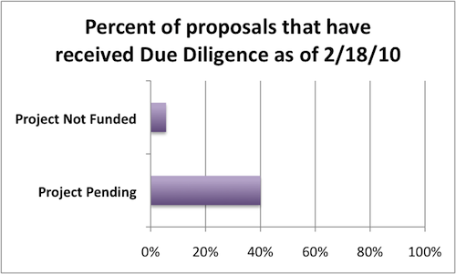

Analyzing BTOP Feedback, Due Diligence and Public Notice Responses
At the end of January, the NTIA notified more than 1300 applicants that their projects would not be funded. This still left more than 500 project applications still pending for funding. At the time, only $250M for 31 projects had been announced; as more information about Round 2 has become available, we now know that Round 1 will total $1.4 billion in grants to be announced by the end of February (this week!).
In order to learn more about the process and inform Round 2 applicants—there is a scant 2 weeks between Round 1’s anticipated announcements and the closing of the Round 2 application period—we sent a brief survey to project applicants who had their project declined for funding and those whose application was still pending. Of the 800 unique applicants in our survey pool, we received 217 responses between February 10 and February 18, 2010.
In this post, I’ll be sharing information about the project feedback process: public response notices, due diligence, and letters of non-funding.
This analysis is done in collaboration with the New America Foundation’s Open Technology Initiative.
Public Notice Responses
For 30 days beginning in late September, 2009 the NTIA allowed public comments on the nearly 1900 BTOP project applications. According to record, 47% of projects received at least 1 public response.
Interestingly, not a single Public Computing Center or Sustainable Broadband Adoption proposal (39% of all applications) received a Public Response Notice. Only network deployment projects (Last Mile and Middle Mile) received comments.
From our surveys, these notices were overwhelmingly filed by existing network providers and of a critical nature. Of survey particants who received a Public Response Notice, 90% of those notices came from current network operators. The nature of their comments was similar, some respondents characterizing them as “canned filings” and “Standard Generic Comments”: 3/4ths of survey responders’ comments claimed the proposed areas were not underserved or not rural. The shotgun nature of these notices can be witnessed by one public response notice submitted “ironically, by one of the [project] partners”.
Only notice summaries, not including attachments and maps, have not been made public. This makes verifying the notices’ claims difficult.
Other responses included: “Others asking for grants to do the same work in the same area” and “There were weak arguments from other local vendors who clearly do not want the competition.”
On the bright side, 2 survey responders said they received a notice of support for their project.
Due Diligence
It’s understandable that an agency making available $4B in grants wants to follow up with grantees to ensure the honesty and integrity of those projects. And with nearly 1900 applications, it can take some time.

Of the 1300 applicants whose applications were declined for funding, 94% of those surveyed did not receive due diligence prior to receiving notice of non-funding. Of those whose applications are still pending, 60% of those surveyed still have not received due diligence correspondence or contact from NTIA representatives.
Of those applicants who did receive Due Diligence followup, the nature seems to be, as one survey response put it “A broad array across the spectrum of categories”:
- budget, cash flows and project costs
- the methodology for determining unserved areas
- pricing and the sustainability of the business model
- demographics
- program usage
- environmental checklist/questionaire
- network architecture
One responder was quite comprehensive:
“We were requested to provide all Step2-Due Diligence documents including organizing docs, evidence of all indebtedness, environmental checklist and maps, depreciation schedule. We also had a site visit with a few topics being discussed, a few maps reviewed, etc.”
Rejection Letters
I’ve been trying to put a pleasant spin on correspondence applicants received informing them their project would not be funded, but it’s easier to call them what they are: rejection letters. From what we know, there wasn’t much else to the letters than that: 70% of our survey responders received no explicit deficiency or rationale to their rejection. The specific language was “Your application was evaluated by objective reviewers and did not score high enough to move forward in the review process.”.
Of the 30% minority of survey responders who did receive a rationale, they can be summarized as
- incomplete application or lack of supporting documents
- insufficient match
- area could not be verified as rural or underserved
For each of these rationales, there was at least someone who felt their application was misjudged:
- “We did not include two forms the application asked for; which was untrue.”
- “Failure to document 20% match when in fact a 30% match was clearly documented in the application”
- “50 miles from an area that was deemed out of bounds, but not according to the information we had available”
What can Round 2 Applicants learn from this?
Despite the transparency of applicant proposals, the evaluation process itself remains opaque to the detriment of Round 2 applicants.
We asked how Round 1 applicants would adapt their proposal for Round 2. The typical response from those with applications still pending was “based on the reason Round 1 was denied”. This will be difficult.
In light of the short window between Round 1 announcements—and their dearth of information—and the Round 2 application deadline, we recommend applicants move forward with their Round 2 application without the expecation of meaningful feedback from Round 1.
Comments
Post new comment